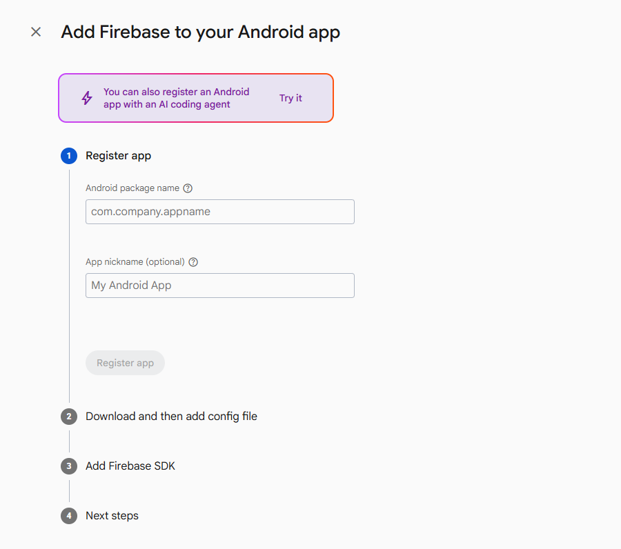
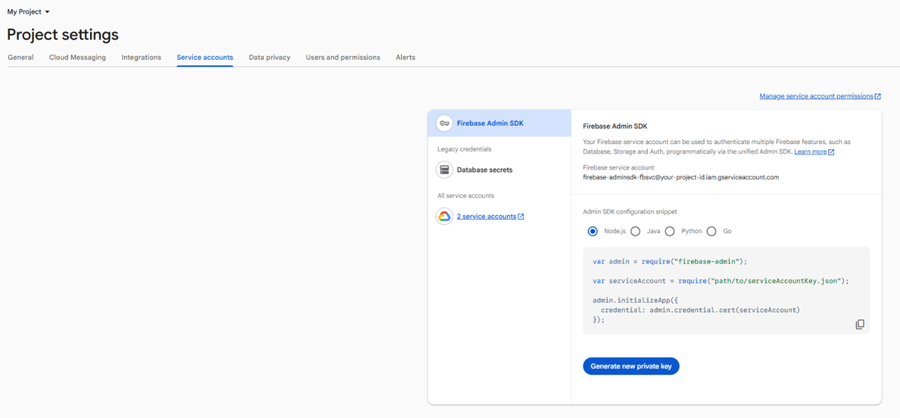
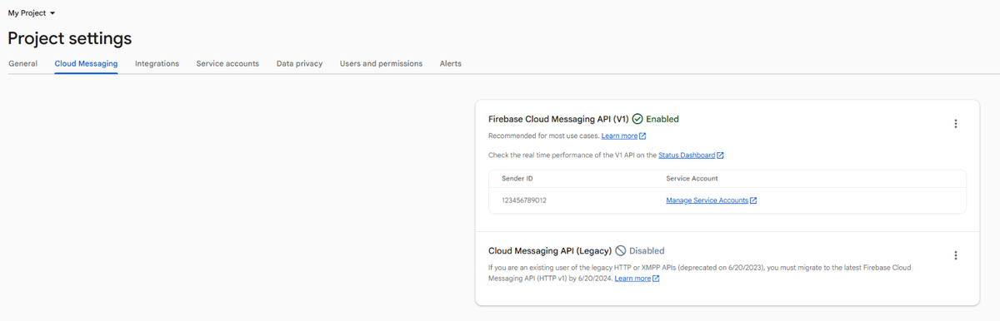
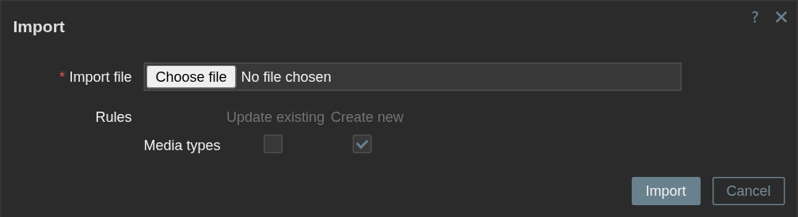
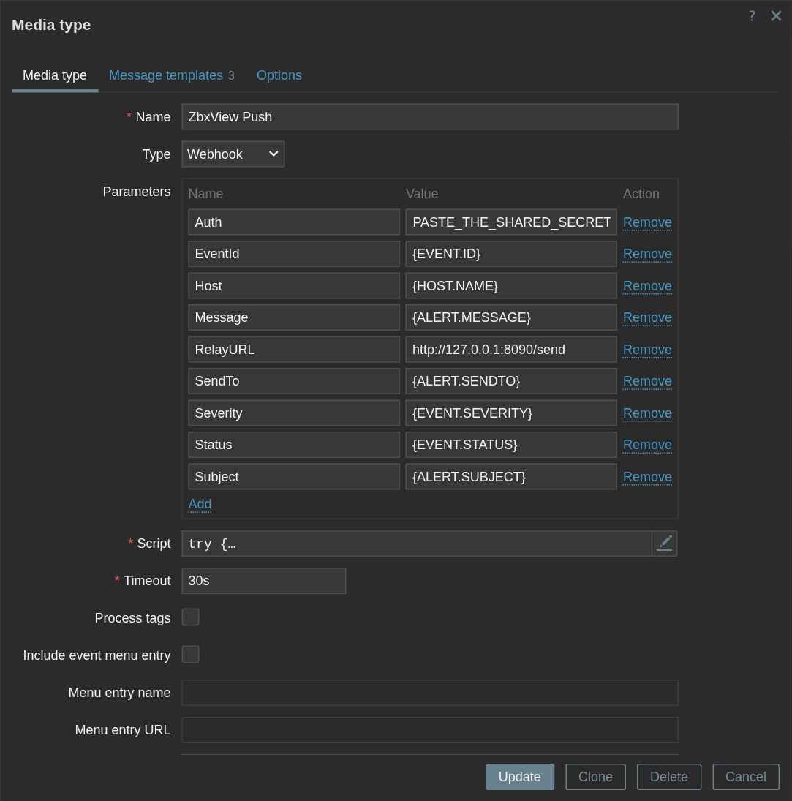
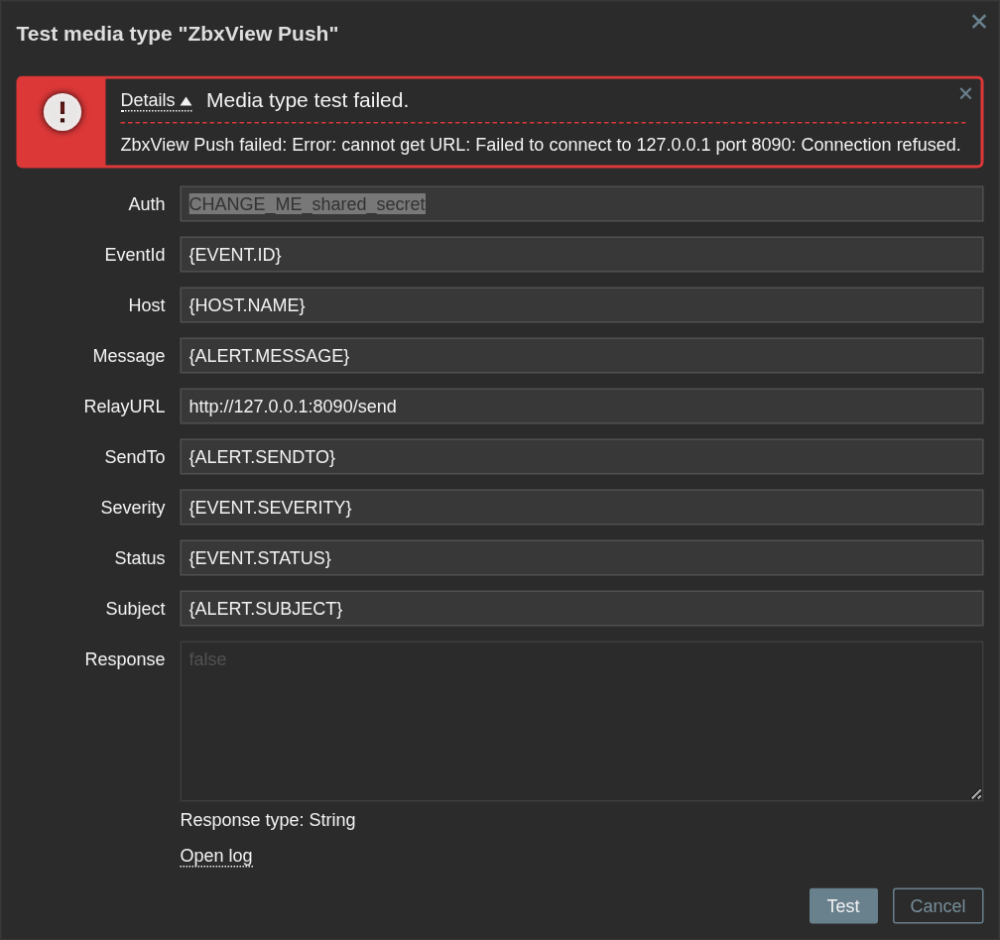
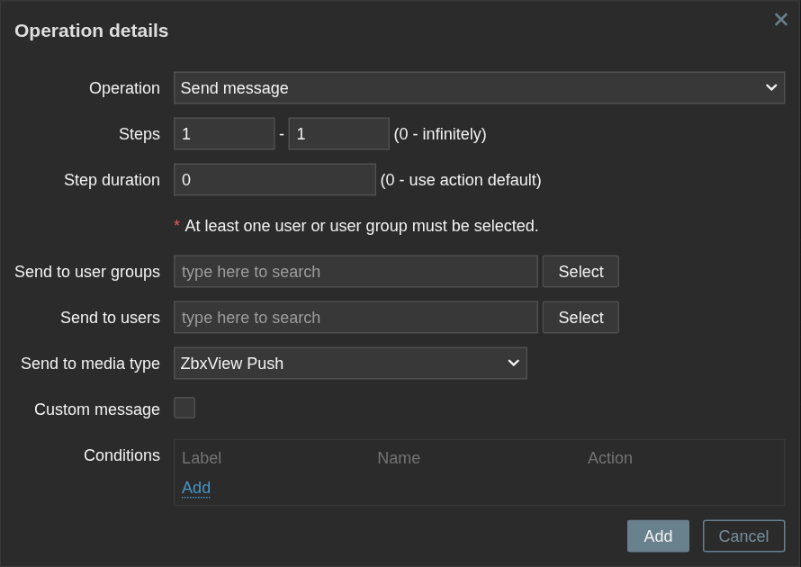
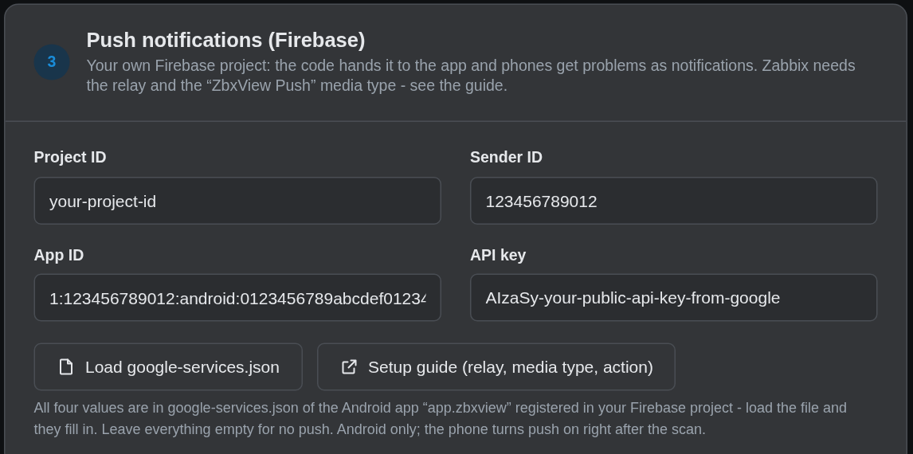
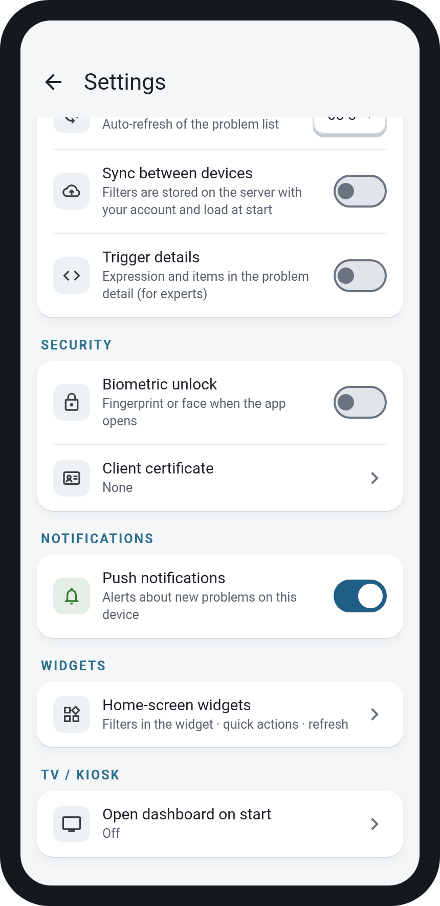

ZbxView has no cloud in the middle. Your organisation creates its own Firebase project, a small relay runs on the Zabbix server, and notifications go straight from your Zabbix to your phones. Android, app 0.50 and newer.
push_* keys).The “relay” is a small program that you install on the Zabbix server. Firebase only accepts messages signed with a private key, and a Zabbix webhook cannot sign them. So Zabbix hands each alert to the relay, and the relay signs it and passes it to Firebase. It is not something you find or click in Firebase.
python3 --version.fcm.googleapis.com and oauth2.googleapis.com at all times, and to pypi.org and github.com during installation.You need two files from Firebase. Keep them apart, because they do different jobs:
| File | Goes to | Sensitive? |
|---|---|---|
google-services.json | The ZbxView connect module in Zabbix (Part 5) | No, it only identifies the project |
service-account.json | The Zabbix server only (Part 3) | Yes, it is a private key. Never put it on a phone or in git. |
Open console.firebase.google.com, click Create project and give it any name. Google Analytics is not needed. The free Spark plan is enough.
google-services.jsonapp.zbxview. Firebase does not check who owns the package, so this is fine.
app.zbxview in Android package name, then click Register app.service-account.json. Firebase gives it a long name such as myproject-firebase-adminsdk-abc12-1234567890.json, and the relay will not find it under that name.
In Project settings, open the Cloud Messaging tab. Firebase Cloud Messaging API (V1) should show Enabled. On a new project it normally does. If it does not, use the ⋮ menu next to it to enable it.

Run the blocks below one at a time, in order. Use the Copy button and paste them into your SSH session instead of retyping them.
Skip this on RHEL, Rocky, Alma and Oracle Linux.
sudo apt install -y python3-venvsudo mkdir -p /opt/zbxview-push-relay
cd /opt/zbxview-push-relay
for f in push_relay.py config.ini.example zbxview-push-relay.service; do
sudo curl -fsSLO https://radekpavlik.github.io/zbxview/tools/push-relay/$f
done
lsYou should see:
config.ini.example push_relay.py zbxview-push-relay.serviceRun this on your own computer, in the folder with the file, replacing the user and server name. On Windows, WinSCP works too.
scp service-account.json youruser@your-zabbix-server:~/Then, back on the Zabbix server:
sudo mv ~/service-account.json /opt/zbxview-push-relay/The shared secret is a password between Zabbix and the relay. This block generates one and writes it to the configuration. Copy the secret it prints, because you need it in step 4.2.
cd /opt/zbxview-push-relay
SECRET=$(openssl rand -hex 24)
sudo cp config.ini.example config.ini
sudo sed -i "s/FILL_ME_LONG_RANDOM/$SECRET/" config.ini
echo "Your shared secret: $SECRET"The installation takes a minute or two. A pip warning about upgrading is harmless.
cd /opt/zbxview-push-relay
sudo python3 -m venv venv
sudo venv/bin/pip install firebase-admin
sudo chown -R zabbix:zabbix .
sudo chmod 600 config.ini service-account.json
sudo cp zbxview-push-relay.service /etc/systemd/system/
sudo systemctl daemon-reload
sudo systemctl enable --now zbxview-push-relaysleep 5
cd /opt/zbxview-push-relay
systemctl is-active zbxview-push-relay
SECRET=$(sudo awk -F' *= *' '/^shared_secret/{print $2}' config.ini)
curl -s -X POST -H "X-Auth: $SECRET" -d '{}' http://127.0.0.1:8090/send; echoYou should see exactly this:
active
{"ok": false, "error": "missing token"}That “error” means success. The relay is running, it accepted your secret, and it is only complaining that this test named no phone. If you see anything else, go to troubleshooting.
Run getenforce. If it prints Enforcing, SELinux has to allow Zabbix to connect to the relay port:
sudo setsebool -P zabbix_can_network onUse these steps instead of 3.1 to 3.7. The relay runs as a separate Compose project next to Zabbix. Your Zabbix compose file stays as it is, no port opens on the host, and only containers on the Zabbix network can reach the relay.
sudo docker ps --format '{{.Names}} {{.Image}}' | grep zabbix-server
sudo docker inspect -f '{{range $n, $c := .NetworkSettings.Networks}}{{println $n}}{{end}}' zabbix-serverThe first command prints the container’s name. Use that name instead of zabbix-server in the second command and in step D.6.
You should see the network’s name, for example:
zabbix_defaultIf several networks are listed, use the one with backend in its name. If you see only host or bridge, see the Docker rows in troubleshooting.
sudo mkdir -p /opt/zbxview-push-relay
cd /opt/zbxview-push-relay
for f in push_relay.py config.ini.example Dockerfile docker-compose.yml; do
sudo curl -fsSLO https://radekpavlik.github.io/zbxview/tools/push-relay/$f
done
lsYou should see:
Dockerfile config.ini.example docker-compose.yml push_relay.pyCopy service-account.json to /opt/zbxview-push-relay/ the same way as in step 3.3.
Replace zabbix_default with your network from step D.1. This block generates the shared secret and writes the configuration. Copy the secret it prints, because you need it in step 4.2. The relay runs as user 10001, so both files must belong to that user.
cd /opt/zbxview-push-relay
SECRET=$(openssl rand -hex 24)
sudo cp config.ini.example config.ini
sudo sed -i -e "s/FILL_ME_LONG_RANDOM/$SECRET/" -e "s/^listen = .*/listen = 0.0.0.0/" config.ini
echo "ZABBIX_NETWORK=zabbix_default" | sudo tee .env
sudo chown 10001:10001 config.ini service-account.json
sudo chmod 600 config.ini service-account.json
echo "Your shared secret: $SECRET"The build takes a minute or two. The container starts again by itself after a reboot.
cd /opt/zbxview-push-relay
sudo docker compose up -d --buildUse your container name from step D.1. The test runs inside the Zabbix server container, so it also proves that the network is right.
sleep 5
cd /opt/zbxview-push-relay
SECRET=$(sudo awk -F' *= *' '/^shared_secret/{print $2}' config.ini)
sudo docker exec zabbix-server wget -O- --header "X-Auth: $SECRET" --post-data '{}' http://zbxview-push-relay:8090/sendThe last line should be exactly this:
wget: server returned error: HTTP/1.0 400 Bad RequestThat “error” means success. The relay is running, it accepted your secret, and it is only complaining that this test named no phone. 401 means the secret does not match, and bad address means the two containers do not share a network. If the container has no wget, skip this check, because step 4.3 tests the same path.
Now continue with Part 4. In step 4.2, set RelayURL to http://zbxview-push-relay:8090/send.
The file is for Zabbix 7.0 and newer. On 6.4, create a webhook media type named exactly ZbxView Push by hand, using this script and the parameters listed at its top.

Auth parameter with the secret from step 3.4 / D.4. You can show it again with sudo grep shared_secret /opt/zbxview-push-relay/config.ini.RelayURL as http://127.0.0.1:8090/send. If Zabbix runs in Docker, set it to http://zbxview-push-relay:8090/send.
Auth value with your shared secret. Leave the other parameters as they are.In the media types list, click Test in the ZbxView Push row, leave the values as they are and click Test. This test sends to a phone that does not exist, so it is expected to fail. The message tells you how far it got:
| Message contains | Meaning |
|---|---|
relay HTTP 502 or relay HTTP 400 | Good. Zabbix reached the relay and the secret is correct. Continue. |
relay HTTP 401 | The Auth value does not match shared_secret. Repeat step 4.2. |
Failed to connect or similar | Zabbix cannot reach the relay. See step 3.6, step 3.7 and the Docker row in troubleshooting. |

relay HTTP 502 or relay HTTP 400 here instead.The action decides which problems are sent, and to whom.
ZbxView push. Add conditions if you want to limit it, for example Trigger severity is greater than or equals High.
You do not enter any phone numbers or addresses. The app registers each phone with Zabbix by itself in Part 6, and Zabbix only sends a user problems on hosts that user has permission to see.
This part is required. The phone has to learn which Firebase project to use, and the QR code from the free ZbxView connect module tells it. Until then, the app shows no Push notifications option at all. (With an MDM you can send the same values as push_* keys instead.)
Skip this if you already have version 1.6 or newer. On the machine that runs the Zabbix web frontend:
cd /usr/share/zabbix/modules
sudo git clone https://github.com/RadekPavlik/Zabbix-UI-Modules-ZbxView-connect.gitIf that folder does not exist, use /usr/share/zabbix/ui/modules. Then, in Zabbix, open Administration → General → Modules, click Scan directory and enable ZbxView connect.
Web frontend in Docker: the modules folder is inside the container, so the module has to come from the host. First check whether the frontend already mounts that folder, using your web container’s name:
sudo docker inspect -f '{{range .Mounts}}{{println .Source .Destination}}{{end}}' zabbix-web | grep modulesIf a line ends with exactly /usr/share/zabbix/modules, as in the official Zabbix compose files, run the git clone command in the host folder shown at the start of that line. Otherwise, clone the module to the host:
sudo git clone https://github.com/RadekPavlik/Zabbix-UI-Modules-ZbxView-connect.git /opt/Zabbix-UI-Modules-ZbxView-connectAdd this line under volumes: of the web service in your Zabbix compose file, then run sudo docker compose up -d in that file’s folder. The web frontend restarts, which takes a few seconds.
- /opt/Zabbix-UI-Modules-ZbxView-connect:/usr/share/zabbix/modules/Zabbix-UI-Modules-ZbxView-connect:ro,zThen scan the directory and enable the module in Zabbix, as described above.

Push turns on by itself after the scan. To confirm, check that Settings → Push notifications is on in the app.

In Zabbix, open Users → Users, choose your user and open the Media tab. There should be a ZbxView Push row with a long token. Each phone has its own row.
Raise a test problem on a host you can see that matches the action, for example by stopping the agent on a lab host or lowering a trigger threshold for a moment. A notification should arrive, and tapping it opens the problem.
That completes the setup. Your other technicians only need 6.1, as long as the action in step 4.4 includes them.
Two places tell you nearly everything. On the server, this shows the relay’s log:
sudo journalctl -u zbxview-push-relay -n 30 --no-pagerIf the relay runs in Docker, use this instead:
sudo docker logs --tail 30 zbxview-push-relayIn Zabbix, Reports → Action log shows whether an alert was sent and the error if it failed. Python FutureWarning and DeprecationWarning lines in the relay log are harmless.
| What you see | Cause and fix |
|---|---|
ensurepip is not available or venv/bin/pip: command not found | The Python venv package is missing. Do step 3.1, run sudo rm -rf /opt/zbxview-push-relay/venv, then repeat step 3.5. |
curl or pip times out | The server has no direct internet access. Go through your proxy: export https_proxy=http://proxy:port, and use sudo -E instead of sudo. |
failed or activating in step 3.6, log shows FileNotFoundError ... service-account.json | The key is missing or still has its long name. See steps 2.3 and 3.3, then run sudo chown zabbix:zabbix /opt/zbxview-push-relay/service-account.json and sudo systemctl restart zbxview-push-relay. |
curl prints nothing in step 3.6 | The relay is not running or not started yet. Wait a few seconds and retry, then check the log. |
| Zabbix runs in Docker | Install the relay with the Docker steps. Inside a container, 127.0.0.1 is the container and not the host, so RelayURL must be http://zbxview-push-relay:8090/send. |
Step D.1 shows only host or bridge | The relay cannot be found by name on these networks. Run sudo docker network create zbxview-relay and put ZABBIX_NETWORK=zbxview-relay in .env. For bridge, also run sudo docker network connect zbxview-relay zabbix-server with your container’s name, and repeat it whenever that container is recreated. For host, add ports: ["127.0.0.1:8090:8090"] to the service in docker-compose.yml and keep RelayURL at http://127.0.0.1:8090/send. Then run sudo docker compose up -d. |
Docker: IsADirectoryError or PermissionError in the relay log | The key was missing when the container started, so Docker created a folder with its name, or a file has the wrong owner. In /opt/zbxview-push-relay, run sudo docker compose down. If the folder exists, remove it with sudo rmdir service-account.json and repeat step D.3. Then run sudo chown 10001:10001 config.ini service-account.json and sudo docker compose up -d. |
| What you see | Cause and fix |
|---|---|
| No Push notifications option in Settings | The phone has no Firebase project yet, or it is an iPhone. Finish step 5.2, then scan a new QR code. Codes made before step 5.2 do not contain the project. |
| “Zabbix did not take the registration” | The media type is missing or not named exactly ZbxView Push, or your account may not change its media. Fix it and turn the switch off and on again. |
| No ZbxView Push row in the user’s Media tab | The phone was scanned before Part 4 was done. Turn the Push notifications switch off and on again. |
| What you see | Cause and fix |
|---|---|
| Nothing in Reports → Action log | The action did not run. Check that it is enabled, that its conditions match, and that the user can see the host. If the action sends to a user group, make sure the user is in it. |
relay HTTP 502 with invalid_grant | Firebase rejected the private key. The key was deleted, or the server clock is wrong. Check the time, generate a new key (step 2.3) and restart the relay. |
relay HTTP 502 mentioning a sender or project mismatch | service-account.json and google-services.json come from different Firebase projects. Both must come from the same one. |
relay HTTP 410 | The phone’s token is no longer valid. Turn the Push notifications switch off and on again. |
| Action log says Sent, but no notification | Check that notifications for ZbxView are allowed in Android settings, and that battery saving is not restricting the app. |
Still stuck? Use the contact form and include the output of step 3.6 / D.6, the relay log and the error from the Action log. Do not send service-account.json, config.ini or the shared secret.